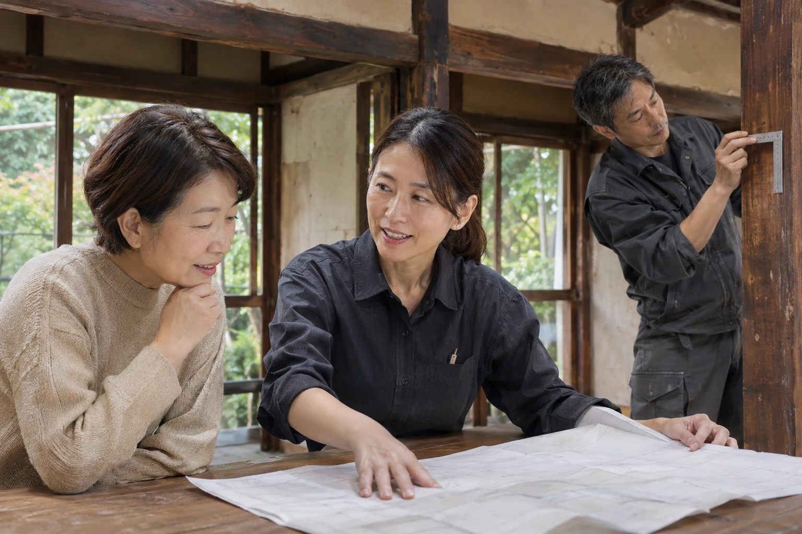

水まわりの改修
台所を使いやすく
キッチンの交換に合わせて、収納や作業台の位置も見直します。
- できる工事
- キッチンの交換、収納の造作、給排水・電気の工事、床や壁の張り替え。
- 見積の前に確かめること
- 設備の仕様、配管を動かす距離、床下の傷み。台所の位置を変えるかどうかも費用に関わります。


頼める工事・費用
毎日の台所から、家全体の住み継ぎまで。
直したい場所と、残したいものを一緒に考えます。
費用は、設備の選び方や家の状態で変わります。
下の金額は他社が公開している施工事例です。
ひき戸工務店の料金や見積額ではありません。
水まわりの改修
キッチンの交換に合わせて、収納や作業台の位置も見直します。
家全体の改修
水まわりも間取りも一緒に見直し、残したい柱や梁を生かす計画を考えます。
工事の範囲が異なる3つの事例です。金額・工期をそのまま自宅に当てはめず、詳しい条件は各社の掲載ページでご確認ください。
間取りのモデルプラン
細かく分かれていた台所と居間を、庭へつながるひと続きの場所に。
架空の住まいを想定したモデルプランです。改修前後を切り替えて比べられます。
改修前 ── 壁で分かれ、台所から庭や居間が見えにくい間取り。
改修の考え方を示す架空の図面です。実際に撤去できる壁は、建物の構造や傷みを調べて判断します。
相談する人

「この壁は取れる？」
「住みながら工事できる？」
「予算の中で、どこから直せる？」
架空の工務店を想定した役割紹介です。実在する担当者の紹介ではありません。
相談から工事まで
直す場所も、予算も、まだ決まっていない。
まずは、暮らしの中で気になることから。
不便に感じる場所、残したいもの、予算と時期を聞きます。
寸法や配管、柱・床下の状態を確認。調査や見積に費用がかかる場合は、実施前に伝えます。
設備代と工事費を分けて説明します。見積に含む範囲と、追加費用が生じる条件も確認します。
内容・金額・工期に合意してから契約へ。工事中に追加が必要になった場合も、内容と金額を伝え、合意してから進めます。
流し台を外す日と、水を止める時間帯を工程表で確かめます。使えない期間の過ごし方も、着工前に相談します。
ボタンを押すと、
相談メモの記入欄が開きます。
気になるところだけ書いてください。名前や住所は必要ありません。
保存したメモは、実際の工務店へ相談するときの控えに使えます。
この家で、
もう一度暮らそう。